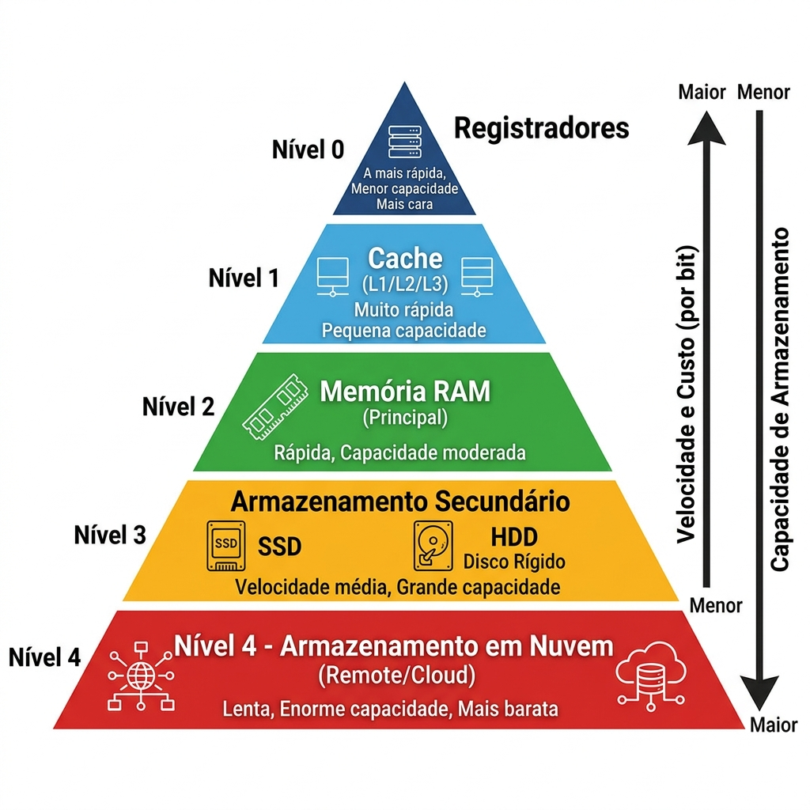
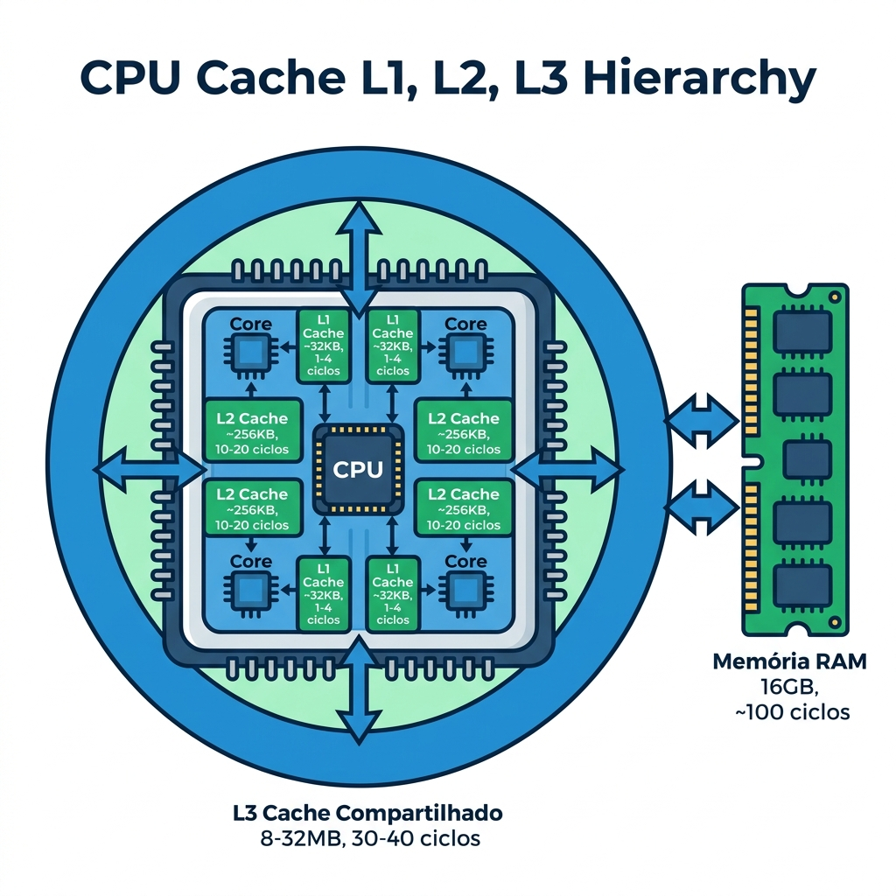
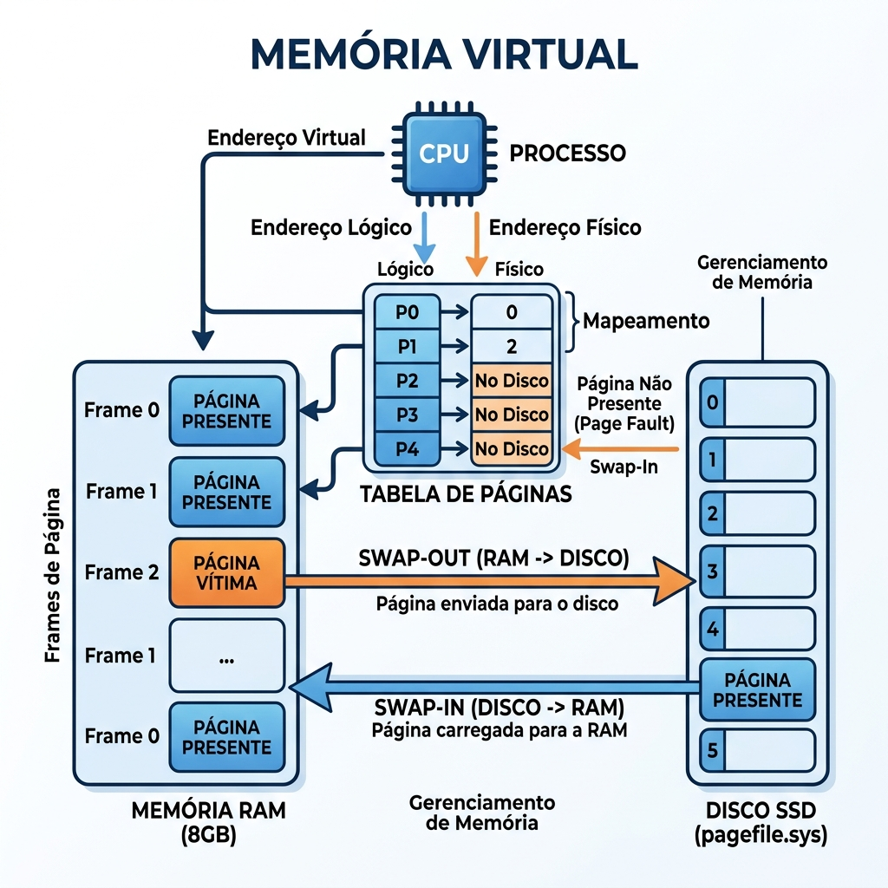

disciplina: Arquitetura de Computadores codigo: “14188” aula: 6 titulo: “Hierarquia de Memória e Memória Virtual” tipo: teorica semana: 6 data: 2026-04-27 status: publicado tags:
- arquitetura
- memoria
- cache
- ram
- paginacao publicar: true
🟢 Aula 06: Hierarquia de Memória e Memória Virtual
Disciplina: Arquitetura de Computadores Curso: Inteligência Artificial e Ciência de Dados — Uniube Semana: 6 Professor: Romualdo Mathias Filho Tipo: 📘 Teórica Tópicos: Registradores, Cache L1/L2/L3, RAM, Memória Secundária, Memória Virtual, Paginação.
🎯 Objetivo da Aula
Ao final desta aula, os alunos serão capazes de:
- Compreender o conceito e a necessidade da hierarquia de memória nos sistemas computacionais.
- Diferenciar os níveis de memória (Registradores, Cache, RAM, HDD/SSD) quanto à velocidade, capacidade e custo.
- Entender o funcionamento da Memória Virtual e o processo de paginação (Swap) gerenciado pelo Sistema Operacional.
- Analisar o impacto da arquitetura de memória no desempenho geral do processador.
🔄 Revisão Rápida (5 min)
| Conceito (Aula Anterior) | Conexão com hoje |
|---|---|
| Registradores (PC, IR) | Vimos que eles armazenam a instrução e o dado exato do momento. Hoje veremos que eles são o “topo” da pirâmide de memória. |
| Unidade de Controle (UC) | A UC gerencia a busca (Fetch) na memória. Hoje entenderemos onde essa busca acontece primeiro: Cache antes da RAM. |
| Gargalo de Processamento | Processadores são extremamente rápidos; se a memória não acompanhar, a CPU fica ociosa. A hierarquia resolve esse problema. |
📌 1. A Pirâmide: Hierarquia de Memória
A hierarquia de memória é uma organização estruturada das tecnologias de armazenamento. O objetivo é criar a ilusão para o processador de que existe uma memória com a velocidade dos registradores e a capacidade e custo do armazenamento em massa.

Legenda: Pirâmide da hierarquia de memória. No topo: memórias menores, mais rápidas e caras (Registradores, Cache). Na base: memórias maiores, mais lentas e baratas (HDD/SSD, Nuvem). Fonte: Elaborado pelo Prof. Romualdo com base em Stallings (2024, Cap. 4).
Regras de Ouro da Hierarquia
| Característica | Do topo ao fundo da pirâmide |
|---|---|
| Velocidade | ↓ Diminui (registradores são os mais rápidos) |
| Capacidade | ↑ Aumenta (do KB ao TB) |
| Custo por byte | ↓ Diminui (SRAM é cara, NAND Flash é barata) |
| Distância da CPU | ↑ Aumenta (registradores são físicamente integrados) |
💡 Exemplo prático (Brasileiro): Pense na hierarquia como a sua organização de trabalho.
- Registradores → O que você está lendo neste segundo (está na sua mente).
- Cache L1 → O papel aberto na sua mesa agora.
- RAM → O armário na sala com seus projetos ativos.
- SSD/HDD → O arquivo morto no porão (cabe tudo, mas demora achar).
- Nuvem → O Google Drive: acessível de qualquer lugar, mas você precisa de internet.
📌 2. Memória Cache: O Amortecedor da CPU
A Cache é o segredo de desempenho dos processadores modernos. Ela fica entre a CPU ultrarrápida e a RAM relativamente lenta, armazenando cópias dos dados que a CPU usa com maior frequência.

Legenda: Organização interna dos níveis de cache em um processador multi-core moderno. L1 e L2 são privadas por núcleo; L3 é compartilhada. Fonte: Elaborado pelo Prof. Romualdo com base em Stallings (2024, p. 154).
Níveis de Cache e suas Latências Reais
| Nível | Tamanho Típico | Latência | Quem compartilha |
|---|---|---|---|
| Registradores | Bytes (dezenas) | ~1 ciclo de clock | Apenas o núcleo em uso |
| Cache L1 | 32–64 KB | 1–4 ciclos | Privada por núcleo (I-Cache + D-Cache) |
| Cache L2 | 256 KB – 1 MB | 10–20 ciclos | Privada por núcleo |
| Cache L3 | 8 – 64 MB | 30–50 ciclos | Compartilhada entre todos os núcleos |
| RAM (DRAM) | 8 – 128 GB | ~100 ciclos | Todos os processos do sistema |
| SSD NVMe | 500 GB – 4 TB | ~100.000 ciclos | Todos os usuários e o SO |
⚠️ Cache Miss: Quando a CPU busca um dado e ele não está na cache, ocorre um “Cache Miss”. O processador então busca na RAM (100x mais lento). Esse é o motivo pelo qual algoritmos que acessam memória de forma sequencial (cache-friendly) são muito mais rápidos do que os que pulam endereços aleatoriamente.
Fluxo de Busca de Dado na Hierarquia de Cache
flowchart TD A[🖥️ CPU solicita dado] --> B{Dado está na Cache L1?} B -- ✅ Cache HIT --> C[Retorna em 1-4 ciclos] B -- ❌ Cache MISS --> D{Dado está na Cache L2?} D -- ✅ Cache HIT --> E[Retorna em 10-20 ciclos] D -- ❌ Cache MISS --> F{Dado está na Cache L3?} F -- ✅ Cache HIT --> G[Retorna em 30-50 ciclos] F -- ❌ Cache MISS --> H[Busca na RAM Principal] H --> I[Retorna em ~100 ciclos] I --> J[Copia dado para as Caches L3, L2, L1] J --> C
Legenda: Fluxo de decisão da CPU ao buscar um dado. A prioridade é sempre a memória mais rápida. Quando ocorre um Cache Miss encadeado, a CPU fica em estado de espera (stall), consumindo ciclos sem executar instruções úteis.
📌 3. Memória Principal (RAM) e Secundária
RAM — A Área de Trabalho Ativa
A RAM (Random Access Memory) é feita de tecnologia DRAM (Dynamic RAM) — mais lenta que a SRAM da Cache, mas viável em grandes quantidades. É volátil: desligou, perdeu tudo.
Tudo que está “aberto e em execução” no seu computador vive na RAM: o navegador com 50 abas, o Spotify, o VSCode, o jogo, o Discord. Quando a RAM esgota, o sistema operacional precisa de um plano B.
SSD/HDD — Armazenamento Persistente
A memória secundária é não volátil (dados sobrevivem ao desligamento). Os SSDs NVMe revolucionaram essa camada com latências em microssegundos, mas continuam sendo estruturalmente 1000x mais lentos que a RAM no acesso aleatório.
📌 4. Memória Virtual: A Mágica do Sistema Operacional
O Problema
Você abre o Chrome com 50 abas, o Photoshop, o VS Code e um jogo. A RAM de 8GB esgota. O que acontece?
A Solução: Paginação (Paging)
A Memória Virtual é uma técnica gerenciada em conjunto pela MMU (Memory Management Unit) do processador e pelo Sistema Operacional. Ela “engana” os aplicativos fazendo cada processo acreditar que possui toda a memória do sistema para si, enquanto na prática os dados são distribuídos entre RAM e disco.

Legenda: Mecanismo de Paginação (Swap). Quando a RAM enche, páginas inativas são movidas para o disco (Swap-Out). Quando necessárias novamente, retornam para a RAM (Swap-In). A Tabela de Páginas traduz endereços lógicos em físicos. Fonte: Elaborado pelo Prof. Romualdo com base em Tanenbaum (2015, Cap. 3).
O Fluxo Completo da Paginação
sequenceDiagram participant Processo as 🧩 Processo (App) participant SO as 🖥️ Sistema Operacional participant MMU as ⚙️ MMU (Hardware) participant RAM as 🟦 RAM participant Disco as 💾 Disco (pagefile.sys) Processo->>MMU: Solicita acesso ao endereço lógico X MMU->>SO: Consulta Tabela de Páginas alt Página está na RAM (Page HIT) SO-->>MMU: Retorna endereço físico na RAM MMU->>RAM: Lê dado diretamente RAM-->>Processo: ✅ Dado entregue (rápido) else Página não está na RAM (Page FAULT) SO->>RAM: Encontra frame livre ou elege página para remover (algoritmo LRU) SO->>Disco: SWAP-OUT: Move página substituída para o disco SO->>Disco: SWAP-IN: Carrega a página solicitada do disco para a RAM SO-->>MMU: Atualiza Tabela de Páginas com novo endereço físico MMU->>RAM: Lê dado agora disponível RAM-->>Processo: ✅ Dado entregue (lento — houve I/O de disco) end
Legenda: Sequência completa de um acesso à memória virtual. O Page Fault é o evento mais custoso — toda vez que ocorre, a CPU entra em estado de espera aguardando o disco.
O Perigo: Thrashing
⚠️ Thrashing: Quando a RAM está tão cheia que o SO fica o tempo todo movendo páginas entre disco e RAM (Swap-Out e Swap-In contínuos), sem conseguir executar nada de útil. Sintoma clássico: disco em 100%, máquina travada, CPU em baixo uso — ela está apenas esperando.
| Situação | Causa | Solução |
|---|---|---|
| Máquina lenta, disco 100% | RAM esgotada → Thrashing | Adicionar RAM ou fechar processos |
| ”Arquivo de paginação cheio” | pagefile.sys inadequado | Ampliar arquivo de paginação |
| Processo com “Page Fault” constante | Conjunto de trabalho maior que a RAM disponível | Otimizar uso de memória da aplicação |
📋 Resumo Estrutural
| Conceito | Definição em Uma Frase |
|---|---|
| Hierarquia de Memória | Estrutura em pirâmide que balanceia velocidade, capacidade e custo das memórias do sistema. |
| Cache (L1/L2/L3) | Memória intermediária (SRAM) super-rápida que guarda cópias de dados frequentes da RAM, reduzindo os Cache Misses. |
| Cache Hit / Cache Miss | Hit: dado encontrado na cache (rápido). Miss: dado ausente, forçando busca na RAM (lento). |
| RAM (Memória Principal) | Memória de trabalho volátil (DRAM) onde residem os programas em execução ativa. |
| Memória Secundária | Armazenamento em massa (HDD/SSD), não volátil e feito para retenção a longo prazo. |
| Memória Virtual | Técnica do SO (com suporte da MMU) que usa espaço do disco rígido como extensão artificial da RAM. |
| Página / Page Frame | Bloco de tamanho fixo (tipicamente 4KB) em que a memória virtual é dividida para gerenciamento. |
| Page Fault | Evento que ocorre quando a CPU acessa uma página não presente na RAM, forçando leitura do disco. |
| Swap-Out / Swap-In | Mover páginas da RAM para o disco (Out) ou do disco para a RAM (In) durante a paginação. |
| Thrashing | Degradação extrema de desempenho causada por excesso de Page Faults e Swapping contínuo. |
❓ Banco de Questões
🔒 Esta seção é visível apenas no Obsidian do professor. Não publicada.
Questão 1: Prática (Múltipla Escolha — Nível: Intermediário)
Enunciado: Em um cenário de suporte, um usuário relata que seu computador, ao ter vários programas pesados abertos simultaneamente, não apresenta travamento total, mas sofre de extrema lentidão com a luz indicadora de uso do disco (HDD/SSD) acesa quase 100% do tempo. Qual conceito arquitetural explica esse comportamento?
- A) O processador aumentou o tamanho da Cache L3 invadindo o espaço do disco rígido.
- B) Ocorreu um erro fatal de “Kernel Panic” na área de registradores.
- C) O sistema está em “Thrashing”: a RAM física esgotou e o SO está realizando Swap contínuo entre RAM e disco via Memória Virtual. ✅
- D) A Unidade Lógica e Aritmética (ULA) está comprimindo os dados diretamente no SSD.
Justificativa: Quando a RAM está completamente cheia, o SO utiliza a Memória Virtual (Swap). Se ele precisa trocar páginas ativas o tempo todo entre a RAM e o disco lento, o gargalo de I/O do disco domina o sistema (Thrashing), causando a lentidão observada e o uso de disco em 100%. A solução seria adicionar mais RAM ao sistema.
Questão 2: Teórica (Dissertativa — Nível: Básico/Intermediário)
Enunciado: Baseando-se no princípio de custo e velocidade, explique por que a arquitetura de computadores adota uma “hierarquia” de memórias em vez de construir toda a memória do computador utilizando a tecnologia super-rápida da Cache L1.
Resposta esperada: A hierarquia existe devido à relação inversamente proporcional entre velocidade e custo/densidade. Fabricar 16GB ou mais de memória utilizando a tecnologia da Cache (SRAM — Static RAM, baseada em flip-flops com múltiplos transistores por bit) seria economicamente inviável e ocuparia um espaço físico enorme no chip. A hierarquia cria a “ilusão” para a CPU de ter uma memória tão rápida quanto a Cache (pois os dados mais frequentes ficam nela) e tão espaçosa e barata quanto um HDD/SSD (onde os dados repousam). Essa combinação é o equilíbrio ótimo entre desempenho e custo. (Stallings, 2024, Cap. 4).
Questão 3: Prática (Múltipla Escolha — Nível: Avançado)
Enunciado: Um programador percebe que seu algoritmo de ordenação A processa um array de 100 MB em 2 segundos, enquanto o algoritmo B, com a mesma complexidade Big-O, leva 8 segundos. A análise do profiler revela que o algoritmo B realiza muitos acessos a posições aleatórias do array. Qual é a causa mais provável dessa diferença de desempenho?
- A) O algoritmo B consome mais ciclos de ULA por ser matematicamente mais complexo.
- B) A frequência do clock da CPU é reduzida dinamicamente quando detecta acessos aleatórios.
- C) O algoritmo A é “cache-friendly” (acesso sequencial gera baixa taxa de Cache Miss), enquanto o B gera muitos Cache Misses por acessar endereços aleatórios, forçando buscas frequentes na RAM (~100 ciclos cada). ✅
- D) O algoritmo B utiliza mais registradores, causando sobrecarga no banco de registradores da CPU.
Justificativa: O princípio da localidade temporal e espacial da cache explica esse fenômeno. Acessos sequenciais à memória permitem que o hardware faça prefetching (pré-busca) e mantenha os dados relevantes na cache L1/L2. Acessos aleatórios constantes causam Cache Misses repetidos, e cada miss força a CPU a esperar ~100 ciclos pela RAM — o que se acumula em segundos de diferença.
📄 Artigo de Aprofundamento
Resumo prático: Artigo direto ao ponto que explica como o kernel Linux gerencia a abstração da memória virtual, garantindo isolamento entre processos e escalabilidade do sistema operacional.
📚 Referências Bibliográficas e Citações
- STALLINGS, William, Arquitetura e Organização de Computadores: projetando com foco em desempenho. 11ª ed. Pearson, 2024. (Capítulo 4: Memória Cache — p. 132–170; Capítulo 8: Memória Principal — p. 250–285).
- TANENBAUM, Andrew S., Sistemas Operacionais Modernos. 4ª ed. Pearson, 2015. (Capítulo 3: Gerenciamento de Memória — Páginas e Memória Virtual — p. 193–267).
Última atualização: 2026-04-27 | Status: publicado